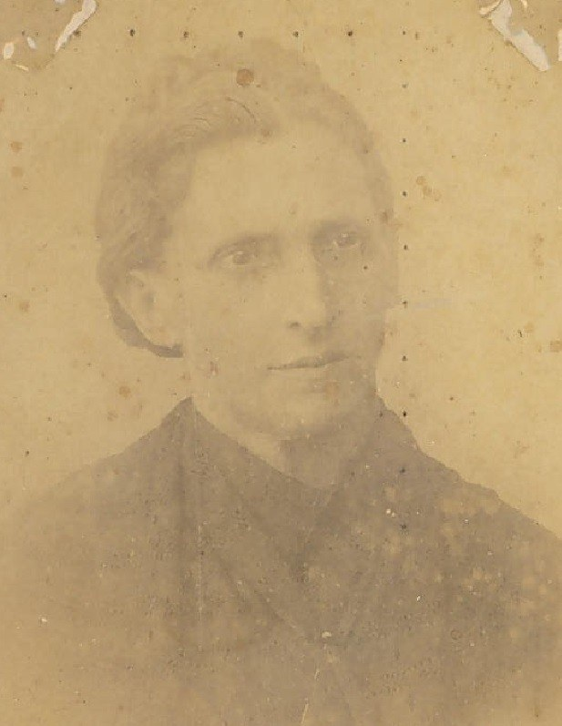
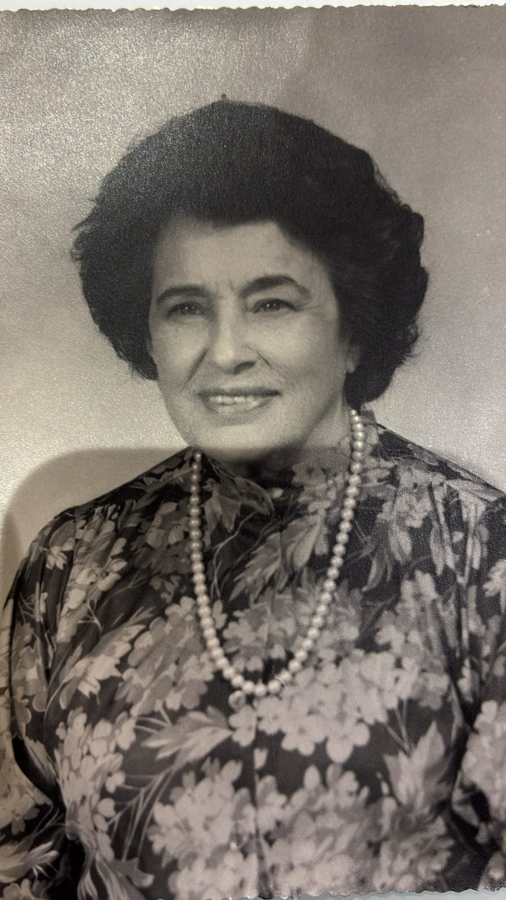
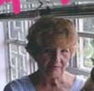

Personas
Una ficha por persona, con sus datos, su vida en fechas, sus fotos y los documentos encontrados. Las generaciones se cuentan desde Diego Pérez Naranjo (h. 1470).
Generación XI
Adrián Naranjo y Cubas
n. 1799
Vecino de Telde y perito agrónomo de Canarias. Padre de dieciocho hijos, los Naranjo Cabrera, varios de los cuales emigraron a Venezuela y Cuba.

Antonia Cabrera y Padrón
n. Telde, 1800
Josefa Antonia Cabrera de Quintana y Padrón, madre de los dieciocho hermanos Naranjo Cabrera. Su familia (los Cabrera y los Padrón) tenía también una rama en Aragua, Venezuela.
2 documentos con imagen
Generación XII
Salvador José Naranjo Cabrera
Telde, 1819 – Venezuela
El mayor de los hermanos Naranjo Cabrera. Llegó a Venezuela con 18 años y se estableció en La Victoria (Aragua). Fue padrino de su sobrino Adrián Salvador en 1877.
8 documentos con imagen
❦Francisco Javier Naranjo Cabrera
Telde, 1820 – San Sebastián (Aragua), 1866
Uno de los hermanos Naranjo Cabrera que emigraron a Venezuela. Se casó en Aragua con María de Jesús Zumbado y murió joven; su último hijo nació ocho meses después de su muerte.
4 documentos con imagen
❦José Naranjo Cabrera
1836 – 1896
Uno de los hermanos Naranjo Cabrera. Sus hijos nacieron entre Cuba y Las Palmas y formaron una rama habanera de la familia, que pudo acoger a Rosalía y a sus hijos.

Manuel Naranjo Cabrera
Telde, 1839 – San Sebastián de los Reyes (Aragua), 1913
Uno de los hermanos Naranjo Cabrera, establecido en La Victoria (Aragua, Venezuela). Fue padrino de muchos niños del pueblo y testigo en la boda de su hermano Salvador.
4 documentos con imagen
❦Juan Naranjo Cabrera
n. 1841
Uno de los hermanos Naranjo Cabrera. Viajó a Cuba en 1878 en el Trinidad, con su hermano Félix. Es el primer firmante de la carta de los pasajeros escrita en La Habana el 28 dic 1878.
1 documento con imagen

Félix Naranjo Cabrera
n. Telde, 20 oct 1843
Labrador de Telde. Vivió temporadas en La Victoria (Venezuela), donde estaban sus hermanos, y en 1878 se embarcó para Cuba, la tierra de su mujer. Sus hijos formaron la rama cubana de la familia, en Pinar del Río.
2 documentos con imagen
❦Rosalía Rodríguez Valdés
n. Consolación del Sur (Cuba)
Cubana de Pinar del Río, casada en Telde con Félix. Según la tradición familiar volvió a Cuba con sus hijos y otros parientes antes de 1900.
Generación XIII
Agustín Benito Naranjo Rodríguez
Telde, 1875 – Pinar del Río, h. 1950-1955
El mayor de los tres hermanos. Emigró a Cuba y formó su familia en Pinar del Río con Quirina Fernández. Su vínculo con Félix y Rosalía está documentado en el nacimiento de su hija Inocencia.

Quirina Úrsula Fernández Fernández
n. San Luis (Pinar del Río)
Cubana de San Luis, en la provincia de Pinar del Río, hija de un canario. Compañera de Agustín Naranjo y madre de sus hijos.
❦Adrián Salvador Naranjo Rodríguez
n. Telde, 2 may 1877
El segundo de los hermanos. Lleva el nombre de su abuelo y de su padrino, el tío Salvador de Venezuela. En 1900 estaba en Pinar del Río.
❦Natalio Naranjo Rodríguez
n. Telde, 1 dic 1878
El menor. Nació en Telde cuando su padre ya navegaba hacia La Habana. Emigró a Cuba con su madre y sus hermanos. Fue padre de Félix Naranjo Fernández, que en 1924 se fue a Canarias.
Generación XIV

Juana Naranjo Fernández
1908 – Lisboa, 2012
Hija de Agustín y Quirina, la mayor de los hermanos conocidos. Según la familia murió en Lisboa con 104 años.
❦Felicita Naranjo Fernández
sin fechas documentadas
Hija de Agustín y Quirina, según el árbol familiar. Sin documentar.

Inocencia María «Nina» Naranjo Fernández
Pinar del Río, 1915 – La Habana, 2010
Hija de Agustín y Quirina. Su certificado de nacimiento es la prueba de que su padre era hijo de Félix y Rosalía. Sus memorias recogen la historia de la familia en Cuba.
Hugo Ángel Fernández Arada
Pinar del Río, 1913 – h. 1984-1989
Esposo de Inocencia «Nina» Naranjo Fernández. Tuvieron cinco hijos, nacidos entre 1942 y 1955.

José Naranjo Fernández
1914 – 1989
Hijo de Agustín y Quirina.
❦Félix Naranjo Fernández
n. h. 1904-1905 · Cuba y Santa Cruz de Tenerife
Hijo de Natalio Naranjo Rodríguez; lleva el nombre de su abuelo Félix. Nació en Cuba y en 1924 se fue a Canarias. Un Félix Naranjo Fernández vivía en Santa Cruz de Tenerife en los años treinta con la edad que le corresponde: muy probablemente es él.
2 documentos con imagen